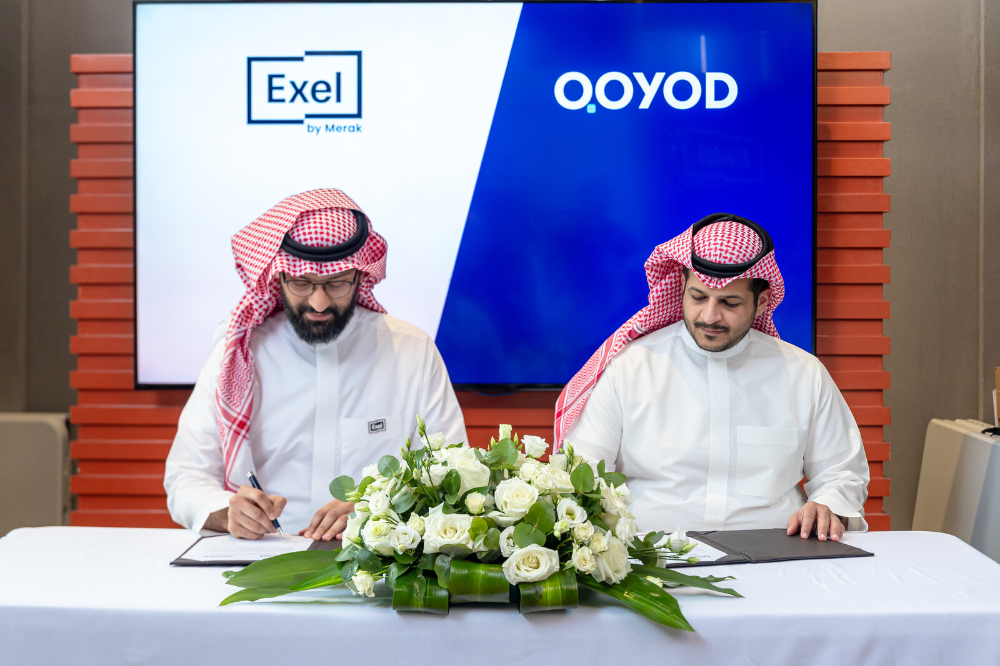

قائد العلامة والعلاقات العامة في قيود. Brand and PR lead at Qoyod.
أقود حضور قيود في الفعاليات الكبرى — زاتكا، بيبان، Seamless: السرديّة في الجناح، الرسائل الرئيسية، والأنشطة الترويجية. أنسّق الشراكات مع ديلويت، هلا، تمارا وغيرها لتفعيل التكاملات وتعظيم القيمة المتبادلة. I lead Qoyod's presence at ZATCA, Biban, and Seamless: booth narrative, key messaging, and promotional activities. I coordinate partnerships with Deloitte, HALA, Tamara and others to activate integrations and maximize mutual value.
على جانب العلامة والعلاقات العامة، أقود الوعي وأضمن اتساق الرسائل عبر جميع المنصات. أبني وأحافظ على علاقات إعلامية ومع المؤثرين، وأكتب البيانات الصحفية والبيانات الرسمية. أنتج أصول التسويق التي تدعم الفرق التجارية، وأراقب سمعة العلامة وأعالج المعلومات المغلوطة عبر الإعلام والمنصات. On brand and PR, I drive awareness and ensure consistent messaging across all platforms. I build and maintain media and influencer relations, draft press releases and official statements. I produce marketing assets supporting commercial teams, monitor brand reputation, and address misinformation across media and social platforms.


